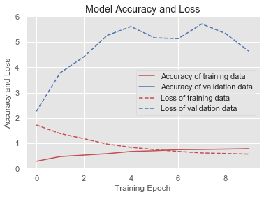
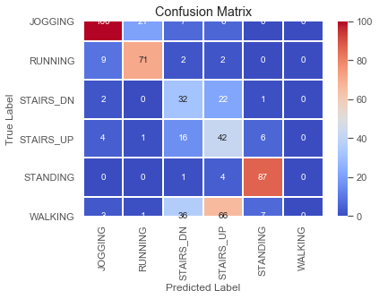
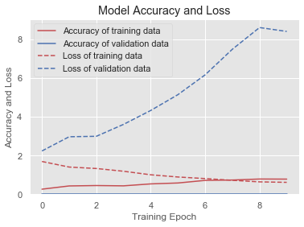
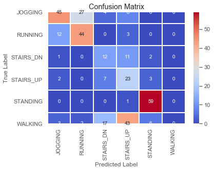
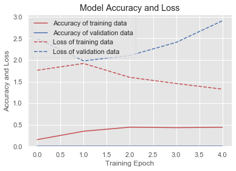
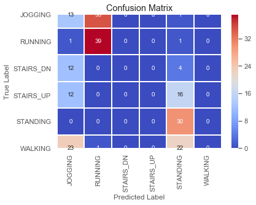
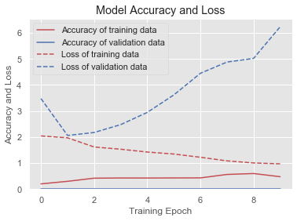
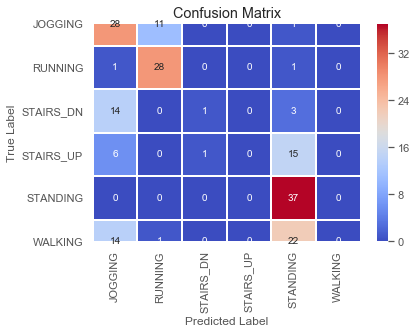
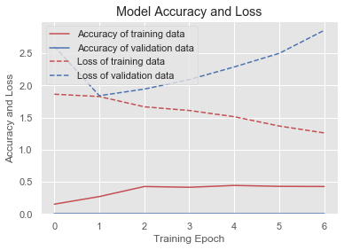
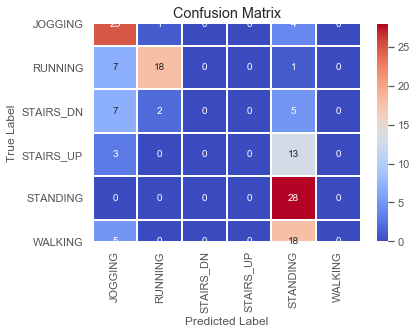

In [197]: for win in window_sizes:
...: window_testing(win)
C:\Users\anand\Anaconda3\envs\HAR1\lib\site-packages\scipy\stats\stats.py:245: RuntimeWarning: The input array could not be properly checked for nan values. nan values will be ignored.
"values. nan values will be ignored.", RuntimeWarning)
For window size, 50
_________________________________________________________________
Layer (type) Output Shape Param #
=================================================================
conv2d_7 (Conv2D) (None, 49, 2, 128) 640
_________________________________________________________________
max_pooling2d_7 (MaxPooling2 (None, 24, 1, 128) 0
_________________________________________________________________
dropout_7 (Dropout) (None, 24, 1, 128) 0
_________________________________________________________________
flatten_25 (Flatten) (None, 3072) 0
_________________________________________________________________
dense_91 (Dense) (None, 128) 393344
_________________________________________________________________
dense_92 (Dense) (None, 128) 16512
_________________________________________________________________
dense_93 (Dense) (None, 6) 774
=================================================================
Total params: 411,270
Trainable params: 411,270
Non-trainable params: 0
_________________________________________________________________
Train on 1662 samples, validate on 416 samples
Epoch 1/10
1662/1662 [==============================] - 3s 2ms/step - loss: 1.7206 - acc: 0.2894 - val_loss: 2.2624 - val_acc: 0.0000e+00
Epoch 2/10
1662/1662 [==============================] - 1s 301us/step - loss: 1.3840 - acc: 0.4735 - val_loss: 3.7755 - val_acc: 0.0000e+00
Epoch 3/10
1662/1662 [==============================] - 1s 332us/step - loss: 1.1820 - acc: 0.5307 - val_loss: 4.4094 - val_acc: 0.0000e+00
Epoch 4/10
1662/1662 [==============================] - 1s 330us/step - loss: 0.9675 - acc: 0.5890 - val_loss: 5.2647 - val_acc: 0.0000e+00
Epoch 5/10
1662/1662 [==============================] - 1s 332us/step - loss: 0.8386 - acc: 0.6751 - val_loss: 5.6139 - val_acc: 0.0000e+00
Epoch 6/10
1662/1662 [==============================] - 1s 320us/step - loss: 0.7478 - acc: 0.7028 - val_loss: 5.1677 - val_acc: 0.0000e+00
Epoch 7/10
1662/1662 [==============================] - 1s 322us/step - loss: 0.6772 - acc: 0.7467 - val_loss: 5.1349 - val_acc: 0.0000e+00
Epoch 8/10
1662/1662 [==============================] - 1s 317us/step - loss: 0.6173 - acc: 0.7551 - val_loss: 5.7147 - val_acc: 0.0000e+00
Epoch 9/10
1662/1662 [==============================] - 1s 309us/step - loss: 0.5959 - acc: 0.7671 - val_loss: 5.3434 - val_acc: 0.0000e+00
Epoch 10/10
1662/1662 [==============================] - 1s 309us/step - loss: 0.5714 - acc: 0.7828 - val_loss: 4.6327 - val_acc: 0.0000e+00

Baseline Error: 39.53%

C:\Users\anand\Anaconda3\envs\HAR1\lib\site-packages\sklearn\metrics\classification.py:1143: UndefinedMetricWarning: Precision and F-score are ill-defined and being set to 0.0 in labels with no predicted samples.
'precision', 'predicted', average, warn_for)
precision recall f1-score support
0.0 0.85 0.75 0.79 134
1.0 0.76 0.85 0.80 84
2.0 0.34 0.56 0.42 57
3.0 0.30 0.61 0.40 69
4.0 0.86 0.95 0.90 92
5.0 0.00 0.00 0.00 113
micro avg 0.60 0.60 0.60 549
macro avg 0.52 0.62 0.55 549
weighted avg 0.54 0.60 0.56 549
Dumping Performance records ..
-------------------------------------------------------------------------
For window size, 80
_________________________________________________________________
Layer (type) Output Shape Param #
=================================================================
conv2d_8 (Conv2D) (None, 79, 2, 128) 640
_________________________________________________________________
max_pooling2d_8 (MaxPooling2 (None, 39, 1, 128) 0
_________________________________________________________________
dropout_8 (Dropout) (None, 39, 1, 128) 0
_________________________________________________________________
flatten_26 (Flatten) (None, 4992) 0
_________________________________________________________________
dense_94 (Dense) (None, 128) 639104
_________________________________________________________________
dense_95 (Dense) (None, 128) 16512
_________________________________________________________________
dense_96 (Dense) (None, 6) 774
=================================================================
Total params: 657,030
Trainable params: 657,030
Non-trainable params: 0
_________________________________________________________________
Train on 1044 samples, validate on 262 samples
Epoch 1/10
1044/1044 [==============================] - 3s 3ms/step - loss: 1.6921 - acc: 0.2615 - val_loss: 2.2362 - val_acc: 0.0000e+00
Epoch 2/10
1044/1044 [==============================] - 0s 467us/step - loss: 1.4048 - acc: 0.4291 - val_loss: 2.9707 - val_acc: 0.0000e+00
Epoch 3/10
1044/1044 [==============================] - 1s 508us/step - loss: 1.3297 - acc: 0.4492 - val_loss: 2.9942 - val_acc: 0.0000e+00
Epoch 4/10
1044/1044 [==============================] - 1s 520us/step - loss: 1.1879 - acc: 0.4339 - val_loss: 3.6104 - val_acc: 0.0000e+00
Epoch 5/10
1044/1044 [==============================] - 1s 503us/step - loss: 1.0054 - acc: 0.5345 - val_loss: 4.3295 - val_acc: 0.0000e+00
Epoch 6/10
1044/1044 [==============================] - 1s 511us/step - loss: 0.8910 - acc: 0.5814 - val_loss: 5.1465 - val_acc: 0.0000e+00
Epoch 7/10
1044/1044 [==============================] - 1s 505us/step - loss: 0.8096 - acc: 0.7155 - val_loss: 6.1698 - val_acc: 0.0000e+00
Epoch 8/10
1044/1044 [==============================] - 1s 487us/step - loss: 0.7198 - acc: 0.7347 - val_loss: 7.4910 - val_acc: 0.0000e+00
Epoch 9/10
1044/1044 [==============================] - 1s 486us/step - loss: 0.6392 - acc: 0.7864 - val_loss: 8.6135 - val_acc: 0.0000e+00
Epoch 10/10
1044/1044 [==============================] - 1s 481us/step - loss: 0.6148 - acc: 0.7816 - val_loss: 8.4123 - val_acc: 0.0000e+00

Baseline Error: 45.37%

precision recall f1-score support
0.0 0.71 0.54 0.61 84
1.0 0.60 0.75 0.67 59
2.0 0.30 0.46 0.36 26
3.0 0.26 0.66 0.37 35
4.0 0.84 0.98 0.91 60
5.0 0.00 0.00 0.00 71
micro avg 0.55 0.55 0.55 335
macro avg 0.45 0.56 0.49 335
weighted avg 0.49 0.55 0.50 335
Dumping Performance records ..
-------------------------------------------------------------------------
For window size, 120
_________________________________________________________________
Layer (type) Output Shape Param #
=================================================================
conv2d_9 (Conv2D) (None, 119, 2, 128) 640
_________________________________________________________________
max_pooling2d_9 (MaxPooling2 (None, 59, 1, 128) 0
_________________________________________________________________
dropout_9 (Dropout) (None, 59, 1, 128) 0
_________________________________________________________________
flatten_27 (Flatten) (None, 7552) 0
_________________________________________________________________
dense_97 (Dense) (None, 128) 966784
_________________________________________________________________
dense_98 (Dense) (None, 128) 16512
_________________________________________________________________
dense_99 (Dense) (None, 6) 774
=================================================================
Total params: 984,710
Trainable params: 984,710
Non-trainable params: 0
_________________________________________________________________
Train on 707 samples, validate on 177 samples
Epoch 1/10
707/707 [==============================] - 3s 4ms/step - loss: 1.7633 - acc: 0.1556 - val_loss: 2.4971 - val_acc: 0.0000e+00
Epoch 2/10
707/707 [==============================] - 0s 681us/step - loss: 1.9210 - acc: 0.3494 - val_loss: 1.9808 - val_acc: 0.0000e+00
Epoch 3/10
707/707 [==============================] - 0s 677us/step - loss: 1.5980 - acc: 0.4441 - val_loss: 2.1061 - val_acc: 0.0000e+00
Epoch 4/10
707/707 [==============================] - 1s 741us/step - loss: 1.4571 - acc: 0.4328 - val_loss: 2.4091 - val_acc: 0.0000e+00
Epoch 5/10
707/707 [==============================] - 1s 737us/step - loss: 1.3250 - acc: 0.4413 - val_loss: 2.9108 - val_acc: 0.0000e+00

Baseline Error: 60.95%

precision recall f1-score support
0.0 0.21 0.27 0.24 49
1.0 0.52 0.95 0.67 41
2.0 0.00 0.00 0.00 16
3.0 0.00 0.00 0.00 28
4.0 0.41 1.00 0.58 30
5.0 0.00 0.00 0.00 46
micro avg 0.39 0.39 0.39 210
macro avg 0.19 0.37 0.25 210
weighted avg 0.21 0.39 0.27 210
Dumping Performance records ..
-------------------------------------------------------------------------
For window size, 160
_________________________________________________________________
Layer (type) Output Shape Param #
=================================================================
conv2d_10 (Conv2D) (None, 159, 2, 128) 640
_________________________________________________________________
max_pooling2d_10 (MaxPooling (None, 79, 1, 128) 0
_________________________________________________________________
dropout_10 (Dropout) (None, 79, 1, 128) 0
_________________________________________________________________
flatten_28 (Flatten) (None, 10112) 0
_________________________________________________________________
dense_100 (Dense) (None, 128) 1294464
_________________________________________________________________
dense_101 (Dense) (None, 128) 16512
_________________________________________________________________
dense_102 (Dense) (None, 6) 774
=================================================================
Total params: 1,312,390
Trainable params: 1,312,390
Non-trainable params: 0
_________________________________________________________________
Train on 508 samples, validate on 128 samples
Epoch 1/10
508/508 [==============================] - 3s 6ms/step - loss: 2.0435 - acc: 0.2008 - val_loss: 3.4768 - val_acc: 0.0000e+00
Epoch 2/10
508/508 [==============================] - 0s 848us/step - loss: 1.9698 - acc: 0.2992 - val_loss: 2.0606 - val_acc: 0.0000e+00
Epoch 3/10
508/508 [==============================] - 0s 868us/step - loss: 1.6181 - acc: 0.4193 - val_loss: 2.1745 - val_acc: 0.0000e+00
Epoch 4/10
508/508 [==============================] - 1s 985us/step - loss: 1.5320 - acc: 0.4272 - val_loss: 2.4773 - val_acc: 0.0000e+00
Epoch 5/10
508/508 [==============================] - 0s 949us/step - loss: 1.4240 - acc: 0.4252 - val_loss: 2.9463 - val_acc: 0.0000e+00
Epoch 6/10
508/508 [==============================] - 0s 949us/step - loss: 1.3473 - acc: 0.4291 - val_loss: 3.6186 - val_acc: 0.0000e+00
Epoch 7/10
508/508 [==============================] - 0s 954us/step - loss: 1.2227 - acc: 0.4311 - val_loss: 4.4487 - val_acc: 0.0000e+00
Epoch 8/10
508/508 [==============================] - 0s 925us/step - loss: 1.0849 - acc: 0.5630 - val_loss: 4.8805 - val_acc: 0.0000e+00
Epoch 9/10
508/508 [==============================] - 0s 977us/step - loss: 1.0054 - acc: 0.5984 - val_loss: 5.0202 - val_acc: 0.0000e+00
Epoch 10/10
508/508 [==============================] - 0s 935us/step - loss: 0.9708 - acc: 0.4764 - val_loss: 6.2338 - val_acc: 0.0000e+00

Baseline Error: 48.91%

precision recall f1-score support
0.0 0.44 0.70 0.54 40
1.0 0.70 0.93 0.80 30
2.0 0.50 0.06 0.10 18
3.0 0.00 0.00 0.00 22
4.0 0.47 1.00 0.64 37
5.0 0.00 0.00 0.00 37
micro avg 0.51 0.51 0.51 184
macro avg 0.35 0.45 0.35 184
weighted avg 0.35 0.51 0.39 184
Dumping Performance records ..
-------------------------------------------------------------------------
For window size, 200
_________________________________________________________________
Layer (type) Output Shape Param #
=================================================================
conv2d_11 (Conv2D) (None, 199, 2, 128) 640
_________________________________________________________________
max_pooling2d_11 (MaxPooling (None, 99, 1, 128) 0
_________________________________________________________________
dropout_11 (Dropout) (None, 99, 1, 128) 0
_________________________________________________________________
flatten_29 (Flatten) (None, 12672) 0
_________________________________________________________________
dense_103 (Dense) (None, 128) 1622144
_________________________________________________________________
dense_104 (Dense) (None, 128) 16512
_________________________________________________________________
dense_105 (Dense) (None, 6) 774
=================================================================
Total params: 1,640,070
Trainable params: 1,640,070
Non-trainable params: 0
_________________________________________________________________
Train on 415 samples, validate on 104 samples
Epoch 1/10
415/415 [==============================] - 4s 9ms/step - loss: 1.8627 - acc: 0.1518 - val_loss: 2.6073 - val_acc: 0.0000e+00
Epoch 2/10
415/415 [==============================] - 1s 2ms/step - loss: 1.8268 - acc: 0.2699 - val_loss: 1.8397 - val_acc: 0.0000e+00
Epoch 3/10
415/415 [==============================] - 1s 2ms/step - loss: 1.6669 - acc: 0.4265 - val_loss: 1.9423 - val_acc: 0.0000e+00
Epoch 4/10
415/415 [==============================] - 1s 2ms/step - loss: 1.6094 - acc: 0.4145 - val_loss: 2.0904 - val_acc: 0.0000e+00
Epoch 5/10
415/415 [==============================] - 1s 2ms/step - loss: 1.5127 - acc: 0.4434 - val_loss: 2.2871 - val_acc: 0.0000e+00
Epoch 6/10
415/415 [==============================] - 1s 2ms/step - loss: 1.3679 - acc: 0.4289 - val_loss: 2.4987 - val_acc: 0.0000e+00
Epoch 7/10
415/415 [==============================] - 1s 2ms/step - loss: 1.2603 - acc: 0.4265 - val_loss: 2.8567 - val_acc: 0.0000e+00

Baseline Error: 48.18%

precision recall f1-score support
0.0 0.53 0.83 0.65 30
1.0 0.86 0.69 0.77 26
2.0 0.00 0.00 0.00 14
3.0 0.00 0.00 0.00 16
4.0 0.41 1.00 0.58 28
5.0 0.00 0.00 0.00 23
micro avg 0.52 0.52 0.52 137
macro avg 0.30 0.42 0.33 137
weighted avg 0.36 0.52 0.41 137
Dumping Performance records ..
-------------------------------------------------------------------------
In [198]: